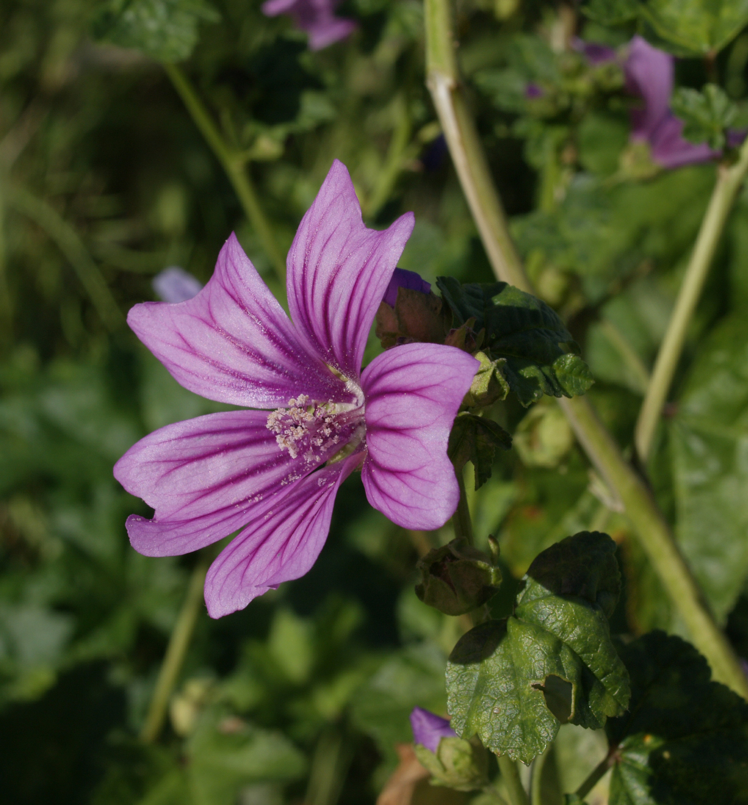
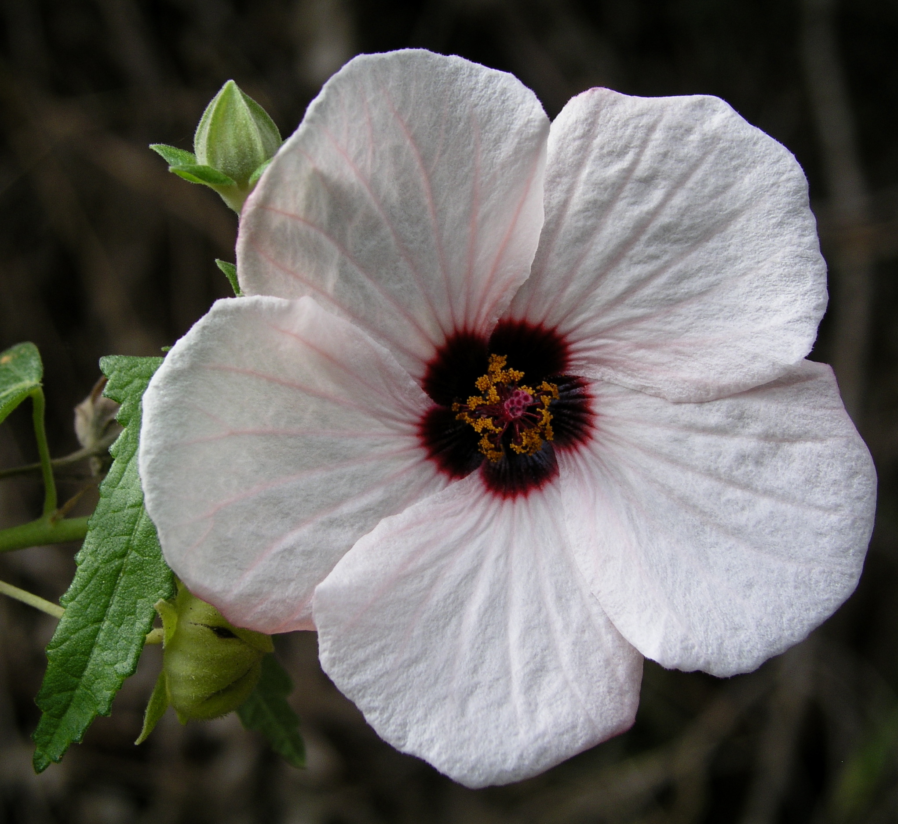
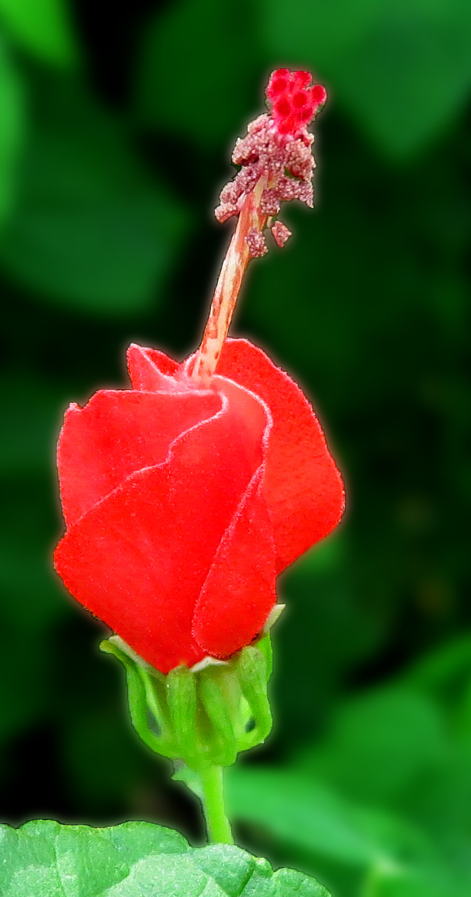
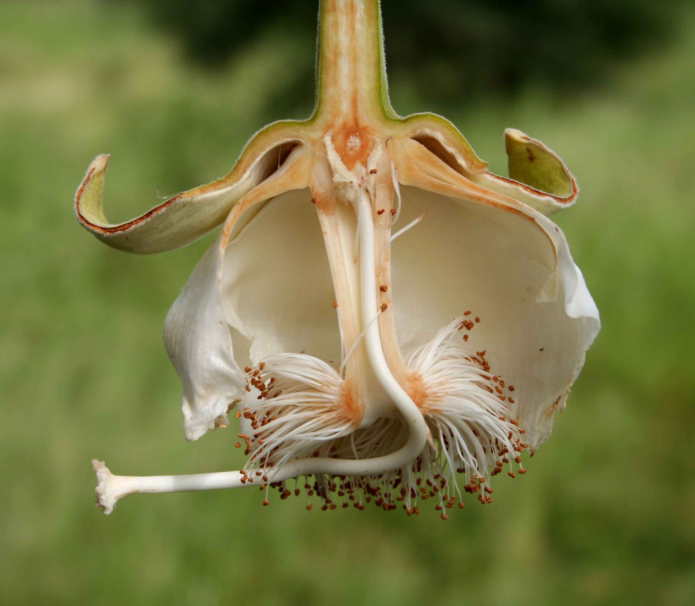
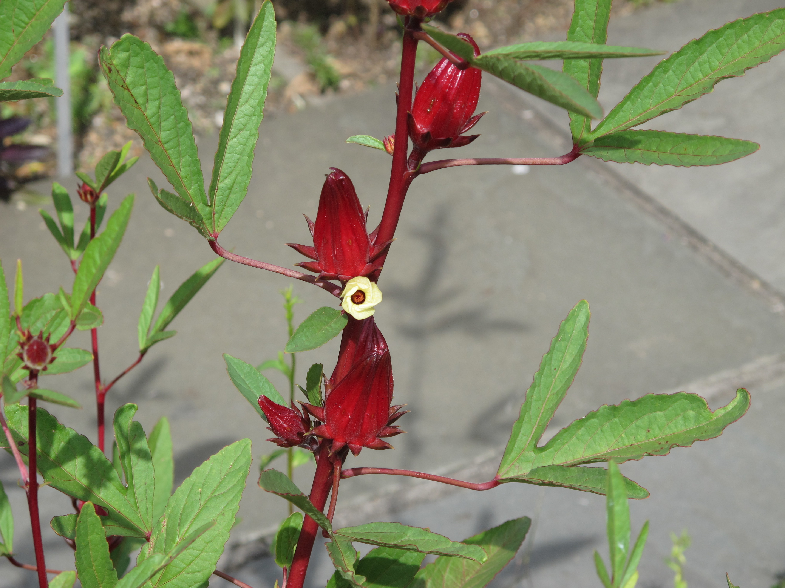
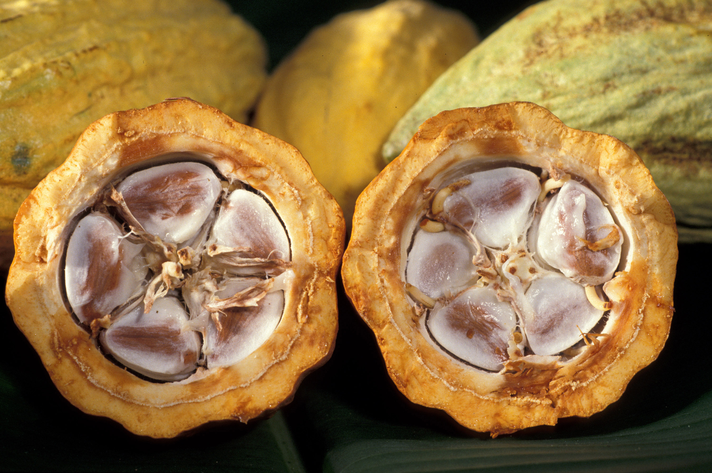
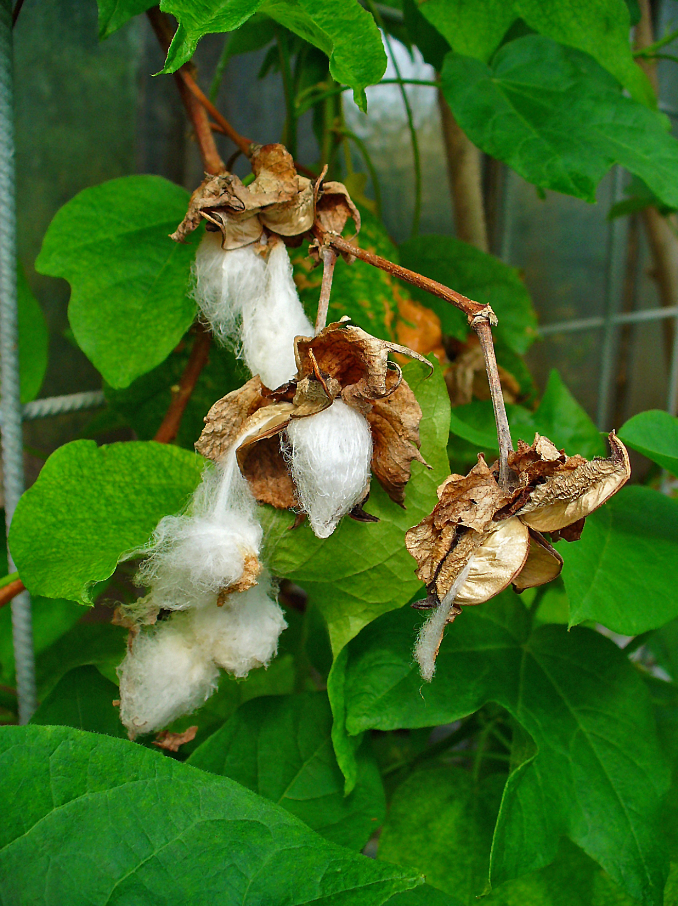

Malvaceae
mallow family
|  Malva sylvestris (common mallow) from Wikimedia Commons by Luis Fernández García - Own work, CC BY-SA 2.5 |
 Pavonia hastata (spearleaf swampmallow) from Wikimedia Commons by David Midgley, CC BY-SA 2.5 |
|  Malvaviscus arboreus (Turk's cap mallow) from Wikimedia Commons by Jim Evans - Own work, CC BY-SA 4.0 |
 Adansonia sp. (baobab) from Wikimedia Commons by Marco Schmidt - Own work, CC BY-SA 3.0 |
{kind=link}
{kind=link}
{kind=link}
{kind=link}
botanical characteristics
Botany in a Day, p. 105-7 | "Malvaceae", Wikipedia
- growth form
- most species are herbaceous plants or shrubs, but some are trees or lianas
- stems/leaves
- alternate leaves
- usually palmately lobed or compound and palmately veined
- margin may be entire, but when dentate, a vein ends at the tip of each tooth (malvoid teeth)
- hairs are common
- crushed leaves have a mucilaginous/slimy quality
- flowers
- distinct regular funnel-shaped flowers
- often surrounded by several bracts
- 3-5 partially united carpels and 5 separate petals
- reproductive structures
- numerous stamens united to form a distinctive column around the pistil
- ovary positioned superior
- typically 5 (rarely 1, up to 20) united carpels
- ovary matures as a cpasule or a schizocarp (rarely, a winged seed or berry)
distribution
"Malvaceae", Wikipedia
- estimated to contain 244 genera with 4225 known species worldwide
"Biogeography (Distribution) of Malvaceae", Malvaceae Info
- cosmopolitan distribution
- most clades and species are found in Mexico, tropical Central and South America, Africa, Madagascar, India, south east and east Asia, Papuasia and Australia
- the distribution reaches to the tips of South America (Cristaria in Tierra del Fuego), South Africa (Anisodontea and other taxa in the Cape Province), Australia (Asterotrichion in Tasmania) and New Zealand (Plagianthus on Stewart Island and the Chatham Islands); in the northern hemisphere the northerly limit is provided by Malva pusilla, which reaches 65°N in Europe
- several groups have species which reach relatively high latitudes, e.g. Malvastrum hispidum in the North American interior, Sidalcea hendersonii in British Columbia, Hibiscus syriacus in Korea and Hibiscus moscheutos in Ontario, Corchoropsis tomentosa in China and Korea and Grewia biloba in China
- the lindens or limes, genus Tilia, are a predominantly cool temperate group, found as far north as Ontario, Finland and Manchuria
ecological roles
"Malvaceae", Wikipedia
- most species are entomophilous (pollinated by insects)
- bees from the tribe Emphorini of the Apidae (including Ptilothrix, Diadasia, and Melitoma) are known to specialize on the plants
common pharmacological constituents
"Angiosperm families - Malvaceae Juss.", DELTA
- sugars transported as sucrose (Abutilon, Hibiscus, Montezuma); cyanogenic, or not cyanogenic; alkaloids present (?), or absent (mostly); iridoids not detected; saponins/sapogenins absent; proanthocyanidins present, or absent; cyanidin (usually), or cyanidin and delphinidin; flavonols present, or absent; kaempferol, or quercetin, or kaempferol and quercetin; ellagic acid absent (11 species, 10 genera); aluminium accumulation not found; sieve-tube plastids S-type
Botany in a Day, p. 105-7
- many mallows contain natural gums in the form of mucilage, pectin, and/or asparagin
patterns in medicinal actions
- demulcent, moistening, soothing
- coats, protects, finds homeostasis; re-establishes balance with the body's moisture
- typically a soothing action on the respiratory, digestive, urinary, and cardiovascular systems
- in some pockets, a stimulating action on the nervous, cardiovascular, and reproductive systems
traditional/cultural uses
"Economic Uses of Malvaceae - Overview", Malvaceae Info
- important crops for fibers
- the most important crop from this family is cotton, which is obtained from the seed hairs of 4 species of Gossypium
- other important fibers include jute (from phloem of multiple species of Corchorus) and kenaf (from phloem of Hibiscus cannabinus)
- kapok, the seed hairs of a number of trees belonging to Bombacoideae, particularly Bombax ceiba is waterproof and is used primarily for insulation
- important food crops
- urian, the fruit of Durio zibethinus, is an important plantation crop in South East Asia
- okra, the fruit of Abelmoschus esculentus, is used as a vegetable
- cacao, the fruit of Theobroma cacao, is the source of chocolate and cacao butter
- the fruits of a number of other species are also eaten
- several species, including Abelmoschus manihot and species of Corchorus and Malva, are grown as leaf vegetables
- marshmallows were originally made from the candied roots of Althaea officinalis
- vegetable oil is produced as a byproduct (cottonseed oil, kenaf oil) of the cultivation of cottons and kenaf for fibre; a vegetable oil is also produced from the baobab (Adansonia)
- beverages
- kola nuts, the fruits of Cola nitida and other species is used commercially as a flavouring ingredient in drinks (colas or kolas); they contain stimulant alkaloids - caffeine and theobromine
- cacao is used in the production of beverages, in addition to chocolate
- the calyxes of roselle (Hibiscus sabdariffa) are used to make jamaica
- many arborescent species of Malvaceae are used for timber, some of them commercially
- demulcent nature of the mucilaginous sap of many members are prized medicinally
warnings
- no family-wide warnings
extra information
"Malvaceae", Wikipedia
- the English common name 'mallow' comes from Latin 'malva' (also the source for the English word 'mauve')
- 'malva' itself was ultimately derived from the word for the plant in ancient Mediterranean languages
prominent genera
- Abelmoschus (incl. okra)
- Abutilon (Indian mallows)
- Adansonia (baobabs)
- Alcea (hollyhocks)
- Althaea (marshmallows)
- Cola (kola trees)
- Dombeya (dombeyas)
- Durio (durians)
- Gossypium (cottons)
- Hibiscus (hibsiscuses)
- Malva (mallows)
- Malvastrum (false mallows)
- Malvaviscus (incl. Turk's cap)
- Modiola (bristlemallows)
- Pavonia (pavonias, swampmallows)
- Sphaeralcea (globemallow)
- Sterculia (tropical chestnuts)
- Theobroma (incl. cacao)
- Tilia (lindens)
plant highlights
see list of materia medica entries here
Hibiscus sabdariffa
|  from Wikimedia Commons by Invertzoo - Own work, CC BY-SA 4.0 |
common names: roselle, Jamaican sorrel en español: flor de Jamaica |
{kind=link}
description
"Roselle (plant)", Wikipedia
- annual or perennial herb or woody-based subshrub
- leaves are deeply three- to five-lobed, arranged alternately on the stems
- flowers are white to pale yellow with a dark red spot at the base of each petal
- flowers have a stout, conspicuous calyx at the base that becomes fleshy and a deep crimson red as the fruit matures, which takes about six months
distribution
"Roselle (plant)", Wikipedia
- native to Africa, most likely West Africa
- the 16th and early 17th centuries it was spread to Asia and the West Indies, where it has since become naturalized in many places
medicinal/magical uses
notes from class, 7 June 2025
- diuretic, antioxidant, hypotensive, aromatic, cool, dry
- relieves edema, swelling, and hot disorders of the urinary tract
- regulates blood sugar and lowers blood pressure
- taken for hormonal balance and menstrual cramps in Latin America
- taken for colds and sore throats in West Africa
- with peppermint for a cooling beverage
- associated with Venus, fire, water, sexuality; used to connect to the divine feminine and for divination, concentration, and consecration
preparation methods
notes from class, 7 June 2025
- infusion
- syrups
- wines
- jams/chutney
warnings
- no known warnings
Theobroma cacao
|  from Wikimedia Commons by Keith Weller, Public Domain |
common names: cacao, cocoa en español: árbol del cacao, cacaotero |
{kind=link}
description
"Theobroma cacao", Wikipedia
- evergreen tree
- leaves are alternate, entire, unlobed
- flowers are produced in clusters directly on the trunk and older branches
- flowers are small with a pink calyx
- the fruit, called a cacao pod, is ovoid, ripening yellow to orange
- pod contains 20 to 60 seeds, usually called 'beans', embedded in a white pulp
distribution
"Theobroma cacao", Wikipedia
- widely distributed from southeastern Mexico to the Amazon basin
- native to the tropics of the Americas
- naturalized/cultivated throughout other tropical regions
- the largest producer of cocoa beans in 2022 was Ivory Coast
medicinal/magical uses
"Theobroma cacao", Wikipedia
- cacao beans constituted both a ritual beverage and a major currency system in pre-Columbian Mesoamerican civilizations
- contains the alkaloids theobromine and caffeine, traces of which have been found on early formative vessels from Puerto Escondido, Honduras (1100–900 BC) and in middle formative vessels from Colha, Belize (600–400 BC)
- some ancient recipes included maize, chili, vanilla (Vanilla planifolia), and honey
- traditional pre-Hispanic beverages made with cacao are still consumed in Mesoamerica, including the Oaxacan beverage known as tejate
preparation methods
"Theobroma cacao", Wikipedia
- cacao
- cocoa
- chocolate
- cocoa butter
warnings
- no known warnings
Gossypium herbaceum
|  from Wikimedia Commons by H. Zell - Own work, CC BY-SA 3.0 |
common names: Levant cotton en español: algodón de levante |
{kind=link}
description
"Gossypium herbaceum", Wikipedia
- shrub with high stems and wide, hairy leaves
- flowers are small and yellow with a purple center
- when ripe and in warm weather, the flower capsule will burst and expose the cotton surrounding the seeds firmly
- the cotton fibres consist of nearly pure cellulose
distribution
"Gossypium herbaceum", Wikipedia
- native to the semi-arid regions of sub-Saharan Africa and Arabia, where it still grows perennially in the wild
- conservation status listed as 'Data Deficient' on the IUCN Red List of Threatened Species
medicinal/magical uses
The Modern Herbal Dispensatory, p. 219
- abortifacient, emmenagogue, warming, moistening
- root is used for menstrual cramping with scant bleeding
- can also be used to induce labor and aid contractions during labor
- indicated for fullness and weight in the bladder with difficult urination, sexual debility, and pelvic atony, and anemia
preparation methods
The Modern Herbal Dispensatory, p. 219
- decoction
- tincture
warnings
The Modern Herbal Dispensatory, p. 219
- abortifacient that causes uterine contractions; avoid during pregnancy
sources
"Angiosperm families - Malvaceae Juss." on DELTA - DEscription Language for TAxonomy. Retrieved 27 August 2025.
"Biogeography (Distribution) of Malvaceae" on Malvaceae Info. Retrieved 27 August 2025.
Easely, Thomas and Steven Horne. The Modern Herbal Dispensatory (2016)
"Economic Uses of Malvaceae - Overview" on Malvaceae Info. Retrieved 27 August 2025.
Elpel, Thomas J. Botany in a Day: The Patterns Method of Plant Identification (2021)
Goldberg Blackthorn, Samantha and Liza Feldkamp. Ace of Cups Herbal Medicine and Botanical Magic Herbal School (2024)
"Gossypium herbaceum" on Wikipedia. Retrieved 27 August 2025.
"Malvaceae" on Wikipedia. Retrieved 27 August 2025.
"Roselle (plant)" on Wikipedia. Retrieved 27 August 2025.
"Theobroma cacao" on Wikipedia. Retrieved 27 August 2025.